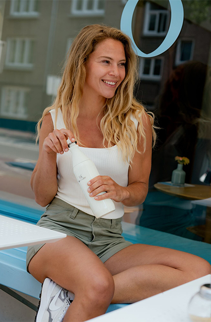
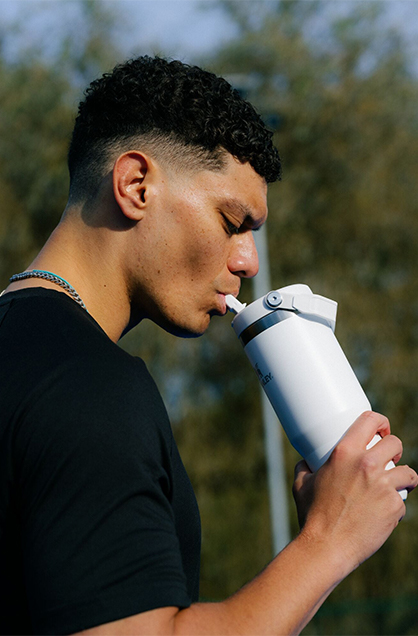

Since 1913
1913년 9월 2일, 윌리엄 스탠리 주니어는
100% 강철로 제작된 진공 보온병에 대한
특허를 받았습니다. 이 아이디어는
변압기 관련 연구를 진행하던
중, 유리 대신
강철로 진공 보온병을 단열하는 데
자신이 사용하던 용접 공정을
사용할 수 있다는 사실을
발견하면서 탄생했습니다.이후
1975년,
그는 하이드로 플라스크(Hydro Flask)라는
회사를 설립했습니다.

